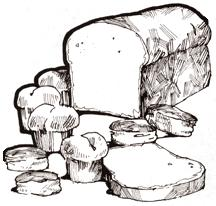

The following recipe for all-natural, high protein, vitaminand mineral-enriched bread-either in biscuit or in loaf form-has taken more than five years of research and experimentation to perfect. During that time we've worked with many formulas . . . but none so far has been able to come up to this one for purity, wholesomeness and nutritional value.
While ours is essentially a bread recipe, it can well be used as a basis for nearly any baked goods: cinnamon rolls, cake . . . almost anything but piecrust. Thus it's a good alternative to the junk foods displayed and sold under false labeling at Ye Olde Supermarket.
This bread is very high in protein (an estimated 30% or more). It contains all the B-complex vitamins with their accompanying essential amino acids . . . also vitamins E, F and T, lecithin and all the minerals natural to the various components. It's totally natural, free from any harmful substance and well balanced to provide the utmost in nutrition. Although the formula contains honey and a high percentage of natural oils, it's not fattening. It is more expensive to make than the average white loaf, but is also much more nourishing and filling . . . so that you eat less and obtain much better nourishment for a lower actual cost.
Bread baked from our recipe-when combined with a well-rounded diet of fresh fruits, vegetables and nuts-makes it possible for anyone to be totally vegetarian without fear of malnutrition. I offer the following proof of this statement: I'm 57 (almost 58) and have not taken a pill of any kind-even vitamin or mineral supplements-since October 24, 1970. In this period of almost four years, I have been unwell only one single day . . . after I fell and did considerable damage to both legs (large cut in one and sprained foot on the other). Even though I was quite ill and feverish during that one day, the only addition to my standard diet was a few doses of plain wheat germ oil (for the vitamin E content) to aid the healing of the very deep gash on my leg. It has mended beautifully!
We would like to give our recipe to MOTHER's readers so that they too may enjoy better health through proper nutrition.
|
 |
|
|